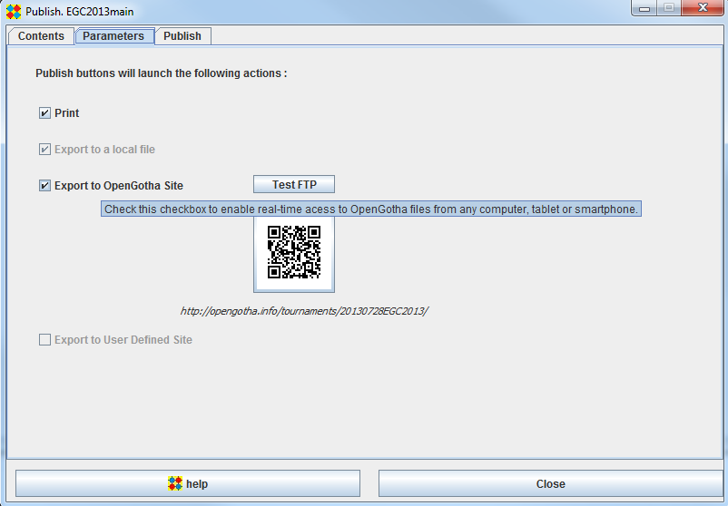

Parameters

Print
Check this checkBox if you want the publish items to be printed
Export to a local file
This checkbox is always checked. Publish items are sent to a html file in export/html directory
Export to a OpenGotha Site
Check this checkBox if you want the publish item to be exported to OpenGotha site.
Use the Test FTP button to test your Internet connection and the FTP upload process.
From a smartphone or a tablet, read this QR code with any QR Code reader
Export to a User Defined Site
This feature is not yet implemented in current OpenGotha release